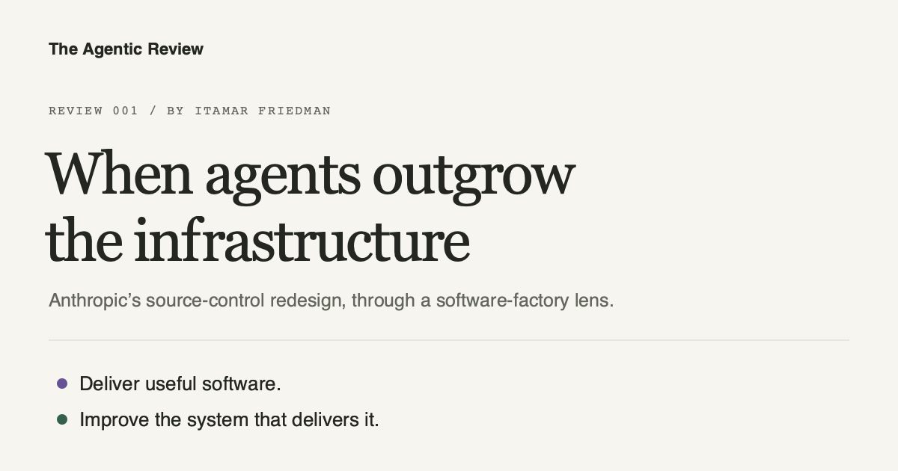

By Itamar Friedman · An open publication
Building software.
Building what builds it.
My reviews of agentic software development: what I would adopt, what I would question, and what it means for the software factory.
The reviews001 / November 2026
Infrastructure · Software factories
A review of Anthropic’s source-control redesign. What I would take into a software factory, where I would be careful, and why faster merges are only part of the story.
Read the review →

A point of view, open to revision
Read it. Challenge it. Improve it.
I’m interested in how we move from AI-assisted development toward software factories that can deliver defined classes of changes within clear organizational boundaries. That includes the engineering, the economics, and the judgment required to know when to involve people.
These reviews are my current thinking. The articles and diagrams live in a public repository, so a correction or a stronger argument can become a pull request. How to contribute →